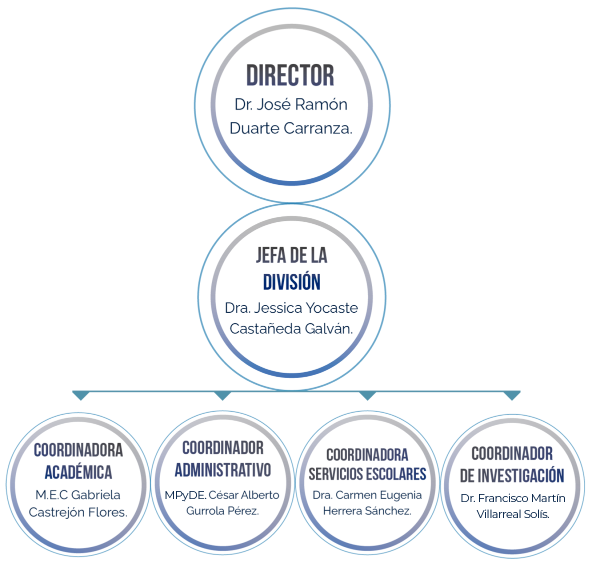

Es un honor darles la bienvenida a la División de Estudios de Posgrado de la
Facultad de Economía, Contaduría y Administración de la Universidad Juárez del
Estado de Durango. En esta División hemos asumido el compromiso de formar
profesionales de alto nivel académico, con una sólida base investigativa y un
profundo compromiso con el desarrollo de nuestra región y del país.
Nuestros programas están diseñados para responder a los retos actuales del
entorno económico, administrativo y social, ofreciendo a nuestros estudiantes
las herramientas necesarias para convertirse en agentes de cambio y líderes
en sus respectivas áreas de conocimiento. Los invitamos a ser parte de esta
gran familia académica.
— Dr. Jesús Guillermo Sotelo Asef
La División de Estudios de Posgrado de la FECA UJED es un espacio de
crecimiento académico, personal y profesional donde la excelencia, el rigor
investigativo y la innovación son el motor de nuestro quehacer cotidiano.
Contamos con un equipo de docentes altamente calificados, comprometidos
con la generación y aplicación del conocimiento, así como con programas
reconocidos a nivel nacional por el Programa Nacional de Posgrados de
Calidad (PNPC) del CONAHCYT. Los invitamos a descubrir la herramienta
para el futuro que tú deseas.
— Dra. Jessica Yocaste Castañeda Galván
Contribuir al desarrollo socioeconómico de la región mediante la formación de profesionales de posgrado de alto nivel, con bases sólidas en investigación científica, innovación tecnológica y compromiso ético con la sociedad, alineados a las necesidades del entorno local, nacional e internacional.
Ser la División de Estudios de Posgrado líder en la región norte del país, reconocida por la calidad de sus programas académicos acreditados nacionalmente, por el impacto de su investigación y por la pertinencia de sus egresados en el desarrollo económico, social y cultural del Estado de Durango.

Estructura de la División de Estudios de Posgrado FECA UJED.